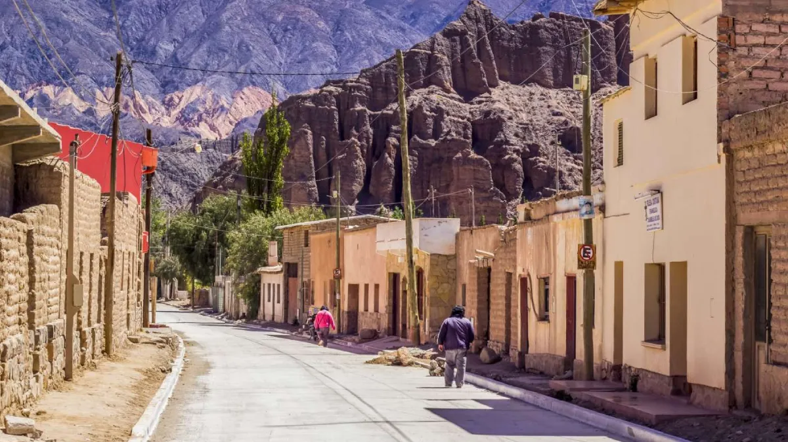
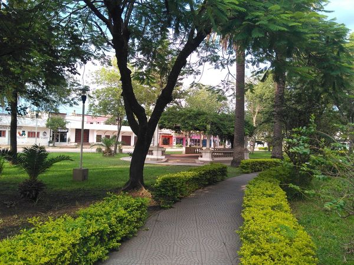
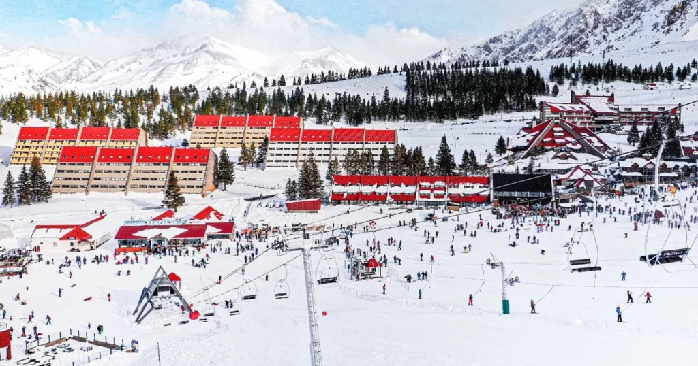
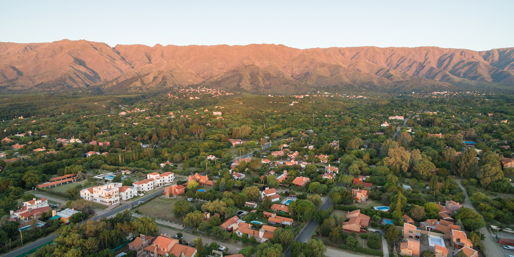

1. Tilcara, Jujuy
Tilcara es un pueblo ubicado al norte de Argentina, en la provincia de Jujuy. Es un lugar caracterizado por su apariencia de desierto, ya que está rodeado por montañas, rocas y cactus. Aproximadamente cuenta con 6 mil habitantes y tiene una altitud de 2488 metros. Tilcara es reconocido por ser escenario de un hecho importante para la historia de Argentina, la Batalla de León, donde el ejército argentino luchó por la independencia de su país.
2. Villa Ángela, Chaco
Fundada por dos empresarios suizos, Carlos Grünelsen y Julio Ulises Martín, quienes compraron una estancia en la provincia del Chaco. Ambos formaron pequeños pueblos, siendo uno de ellos Villa Ángela. El nombre fue un homenaje de Julio Ulises Martín a su esposa, la argentina Ángela Joostens. Villa Ángela es conocido en Chaco por su tradicional carnaval, el cual se realiza todos los años en enero y febrero.
3. Las Grutas, Río Negro
Ideal para los amantes del verano. Las Grutas es un balneario ubicado en la costa argentina reconocido por tener las playas más bonitas, donde el sol cálido, la arena y el agua pura forman un buen ambiente. Este destino es muy visitado por las personas en los primeros meses del año, época ideal para disfrutar de este hermoso sitio. Además de nadar en el mar, también puedes pasear en bote para conocer a los animales marinos.

4. Las Leñas, Mendoza
Si en Las Grutas vimos playa y calor, en Las Leñas hay nieve y frío. Aquí, los argentinos y extranjeros practican deportes extremos invernales como el snowboarding, siendo uno de los principales centros de entrenamiento en Latinoamérica. En las épocas de verano, y a pesar de que el lugar ya no tiene nieve, las actividades no paran, ya que se practican otros deportes como las caminatas o el ciclismo de montaña.
5. Villa de Merlo, San Luis
Villa de Merlo es una zona con mucha naturaleza, entre campos y bosques, además de las montañas que la rodean. Su clima cálido y la poca cantidad de habitantes generan un ambiente ideal para las personas que buscan alejarse de la ciudad. Gracias a esto, Villa de Merlo se convirtió en una zona turística muy visitada en Argentina.
Complete la sopa de letras con las palabras mostradas.
Marca verdadero o falso
- Villa de Merlo es una zona con mucha naturaleza, entre campos y bosques, además de las montañas que la rodean. Su clima cálido y la poca cantidad de habitantes generan un ambiente ideal para las personas que buscan alejarse de la ciudad. Gracias a esto, Villa de Merlo se convirtió en una zona turística muy visitada en Argentina.